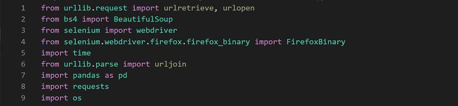
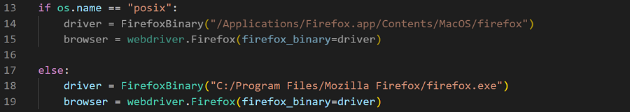
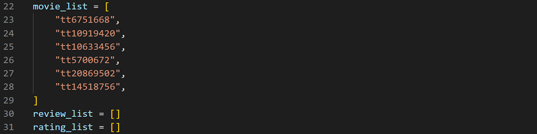
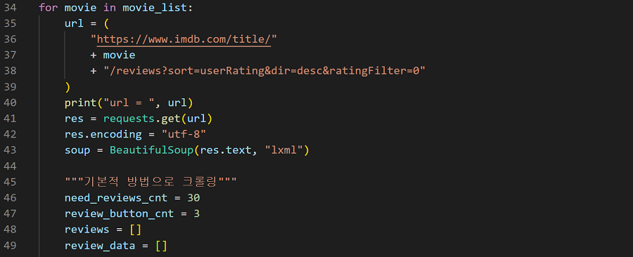
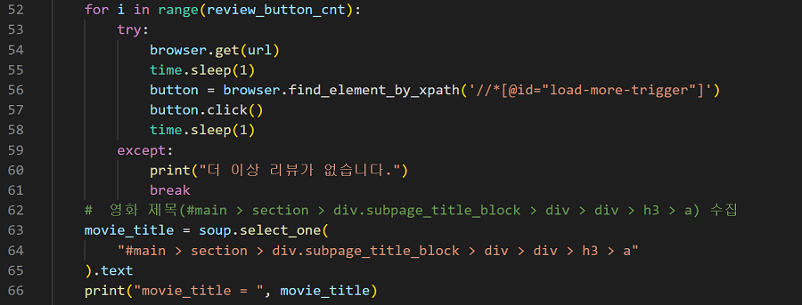
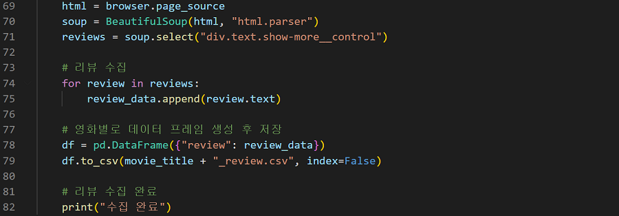

멀티캠퍼스
인공지능을 활용한 데이터 분석
주간프로젝트
북치고 장고치우고
Home
About
Contact
크롤링 구성
Firefox 브라우저를 통하여 IMD에서 데이터를 추출하였습니다.
IMBD 크롤링
Firefox
IMDB 크롤링
IMDB에서 영화제목, 평점을 비롯한 여러데이터를 추출하였습니다.
라이브러리, 패키지 선언
request | BeautifulSoup | selenium | pandas | os 등등

Selenium 웹 드라이버사용을 위한 경로 정의
MAC 과 Windows의 경우에 따른 firefox 경로 정의

크롤링을 위한 사전 변수 정의
영화 드라마 크롤링을 위한 주소, 리뷰, 별점을 저장하기 위한 리스트 정의

리뷰 크롤링
6개의 영화 드라마의 리뷰 크롤링

동적 페이지에 대한 대응
동적 페이지 크롤링을 위한 Selenium의 웹드라이버 사용 (버튼클릭)

크롤링 마무리 및 저장
수집한 데이터를 영화별 저장(.csv)

코드 전체보기
Firefox 사용 이유
셀레니움 사용으로 인한 속도 저하를 최대한 보안하고자 Firefox채택.
출처